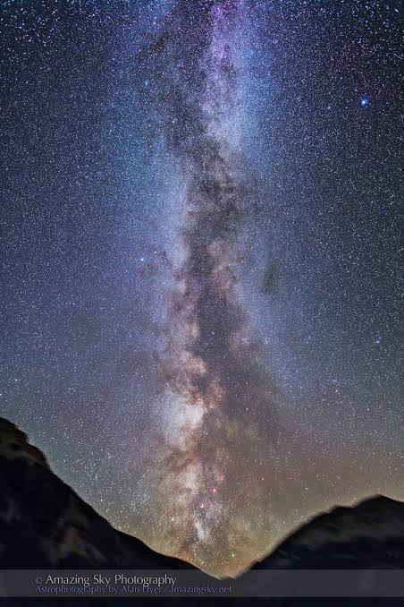
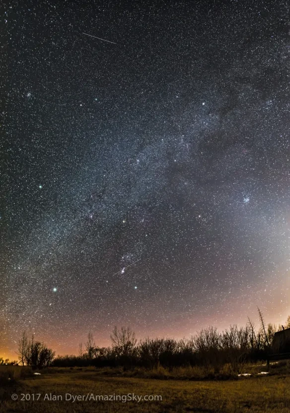

Нүүр
Дэлхийн байрлал
ба хөдөлгөөн
Сүүн зам: зун ба өвөл


Сансар дахь бидний «хаяг»
Зураг 2.1 · Галактик, нарны аймаг ба дэлхий гараг
Сүүн зам — манай галактик
СБ 22
Галактикийн хэлбэр · карт дээр дар
Таамаглал дэвшүүлэх
Зайг хугацаагаар хэмжих: гэрлийн жил
СБ 22 · «Гэрлийн жил»
Сансарт зай маш хол тул түүнийг гэрэл явах хугацаагаар хэмждэг
⭐ Жишээ: Алтан гадас 433 г.ж. зайтай → бид түүний 433 жилийн өмнө цацарсан гэрлийг хардаг.
1) 1 жилд хэдэн секунд вэ? 365 хоног × 24 цаг × 60 мин × 60 с = 31 536 000 с
2) Гэрлийн хурдаар үржүүлнэ: 300 000 км/с × 31 536 000 с ≈ 9 460 800 000 000 км
👆 Биет дээр дарж зай, гэрэл ирэх хугацааг үз · Шкал логарифм (алхам бүр 10–100 дахин)
🧮 Хувиргагч
Нар бол од — шатаж буй хийн бөмбөлөг
Зураг 2.2 · СБ 22–23
Нарны гүнд устөрөгчийн атом гелид шилжих цөмийн урвал тасралтгүй явагдаж асар их энерги ялгардаг.
Бичлэг: Гарагууд Нарыг хэрхэн тойрдог вэ?
Зураг 2.3 · Хүснэгт 2.1
Тойрох хурд (км/с)
🪐 Дэлхий ван яагаад гараг биш вэ?
2006 онд одон орон судлаачид гараг байх 3 нөхцөл тогтоосон:
- ✔ Нарыг тойрдог
- ✔ Бөмбөрцөг хэлбэртэй
- ✘ Тойрог замдаа «ганцаараа эзэн» — Дэлхий ван олон мөсөн биетэй хамт эргэдэг
Тиймээс одоо одой гараг гэж ангилдаг.
Гарагуудыг харьцуулъя
Хүснэгт 2.1
| Гараг | Диаметр (км) | Нягт (г/см³) | Масс (Дэлхий = 1) | Нарнаас (сая км) | Тэнхлэгээ эргэх | Нарыг тойрох |
|---|
Боде-ийн хуулийг хэрхэн бодох вэ?
Ж. Боде, 1778 · Алхам алхмаар · СБ 24
Зай → хурд → амьдрал
СБ 23, 25 · Нарыг тойрох хурдны график
👆 Улбар шар цэгийг хулганаар чирж зайг өөрчил · Нарнаас зай: 1,0 о.о.н
🤔 Хэрэв ... бол? (СБ 23)
Сансрын тест
Дүгнэлт: таамаглал зөв байсан уу?
Гол санаа
- Дэлхий — Сүүн зам галактикийн (100 тэрбум од) нэг од болох Нарыг тойрох гараг; Нар төвөөс 30 000 г.ж.
- Нар — Дэлхийгээс 150 сая км (1 о.о.н), гэрэл нь 8 минутад ирнэ; энерги нь цөмийн урвалаас.
- Нарнаас холдох тусам гарагийн тойрох хурд багасч, жил уртасна; зай нь Боде-ийн зүй тогтолтой ойр.
- Дэлхийн байрлал, хэмжээ, эргэлтийн хугацаа — амьдрал оршин тогтнох үндэс.
Гэрийн даалгавар ба гарах тасалбар
🏠 Гэрийн даалгавар
- СБ 24, «Гаргуудын нарнаас алслагдсан зай»: Хүснэгтийг бүрэн бөглөж, Боде-ийн хуулийн дүгнэлтээ бич.
- СБ 24, 6–7-р асуулт: Өмнөд Хаалганы гялаан одноос гэрэл хэдэн жилд ирэх вэ? Нар энэ одноос хэд дахин ойр вэ? Алтан гадас «сөнөсөн» бол бид хэзээ мэдэх вэ?
- СБ 23-ын даалгавар: Дэлхийн байрлал, хэмжээ, эргэлтийн хугацаа амьдралын үндэс болсныг 5–6 өгүүлбэрээр тайлбарла.
⭐ Өөрийгөө үнэл
0 / 10🎫 Гарах тасалбар «3-2-1»
Дараагийн хичээл: Дэлхий ба нарны харилцан байрлал ☀️